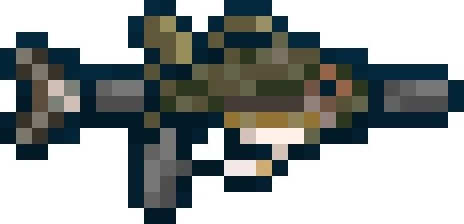

Bassooka
Bassooka
- 
Statistics
| Type | Weapons |
|---|---|
| Uses ammo | Fish Bullet Pack |
| Damage | 25 (Ranged) |
| Knockback | 0 (No knockback) |
| Critical chance | 4% |
| Use time | 34 (Slow speed) |
| Velocity | (To Be Calculated) |
| Tooltip | TBD |
| Rarity |
Projectile created
-
Bassoka Bullets

The Bassoka is a pre-Hardmode ranged
weapon that can be crafted using 65
Bass. It uses Fish
Bullets as ammunition .
Its best modifier is Unreal.